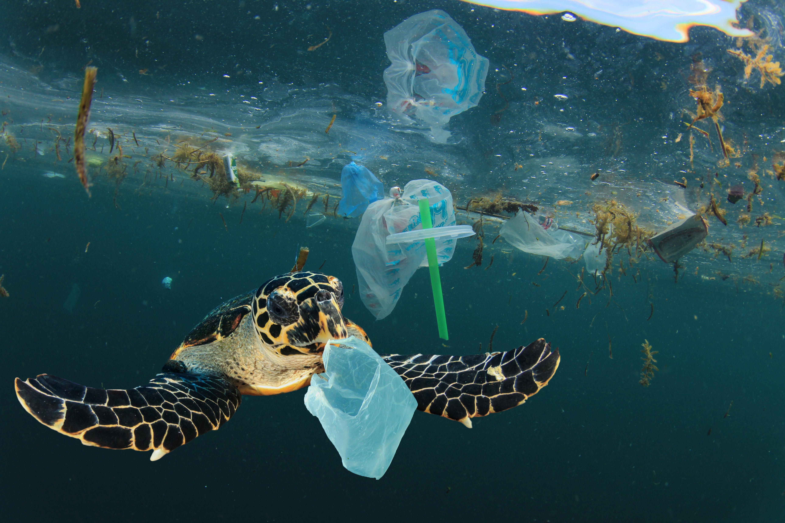
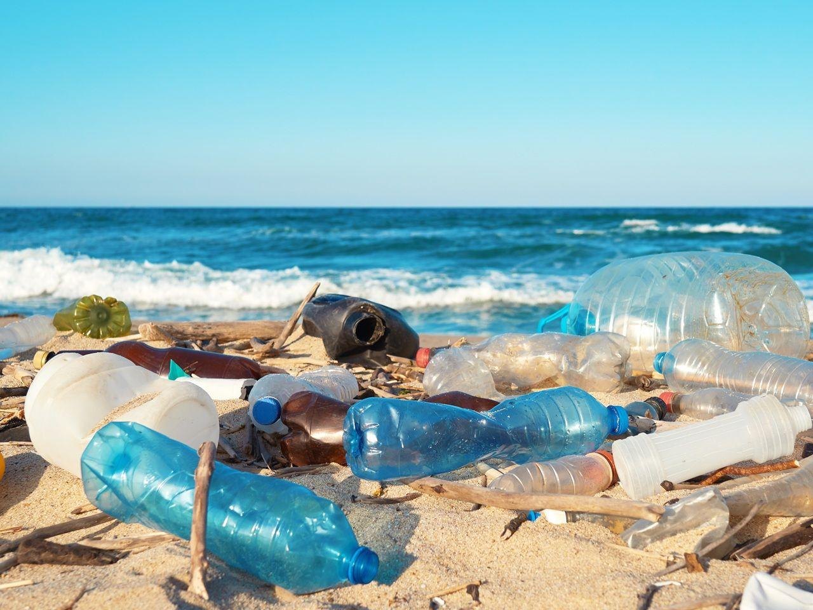
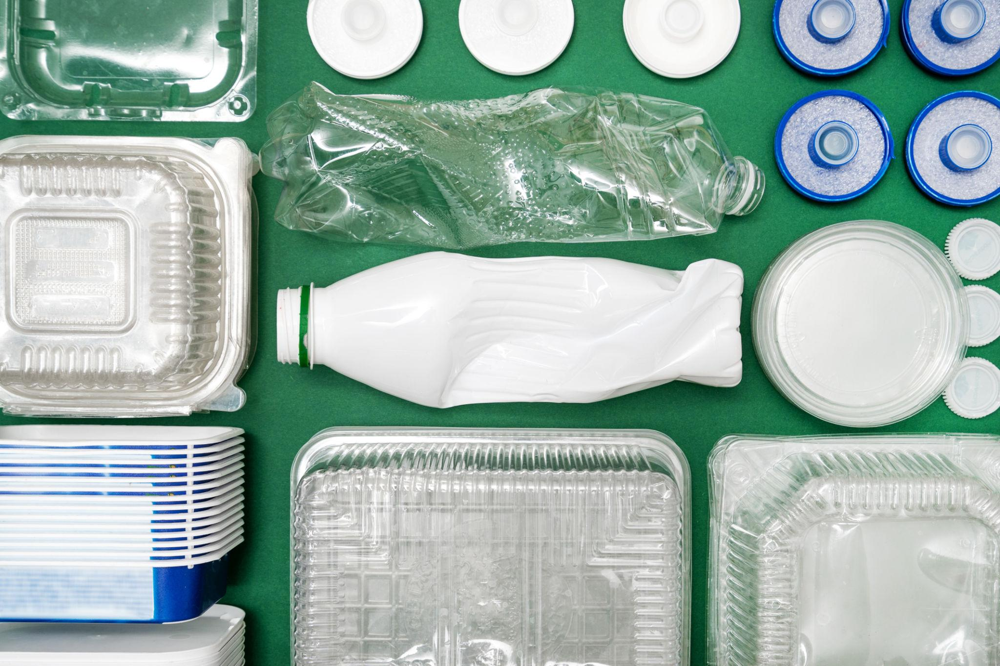
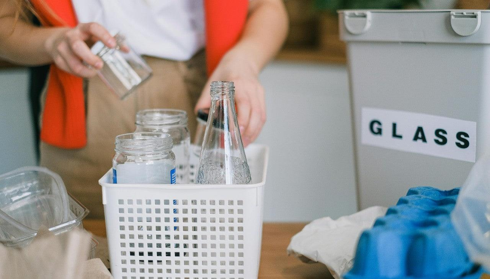
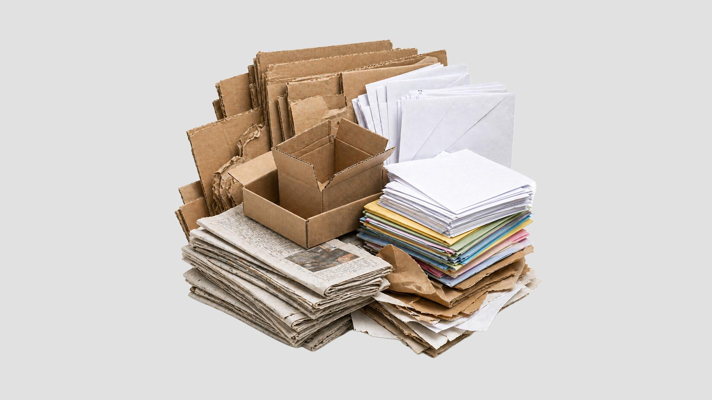
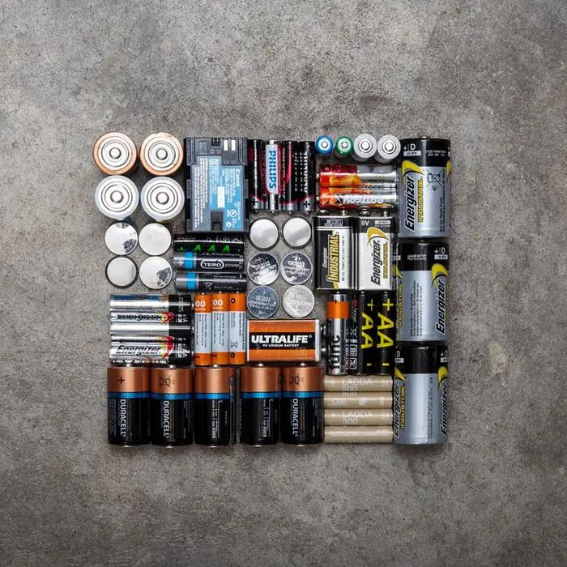
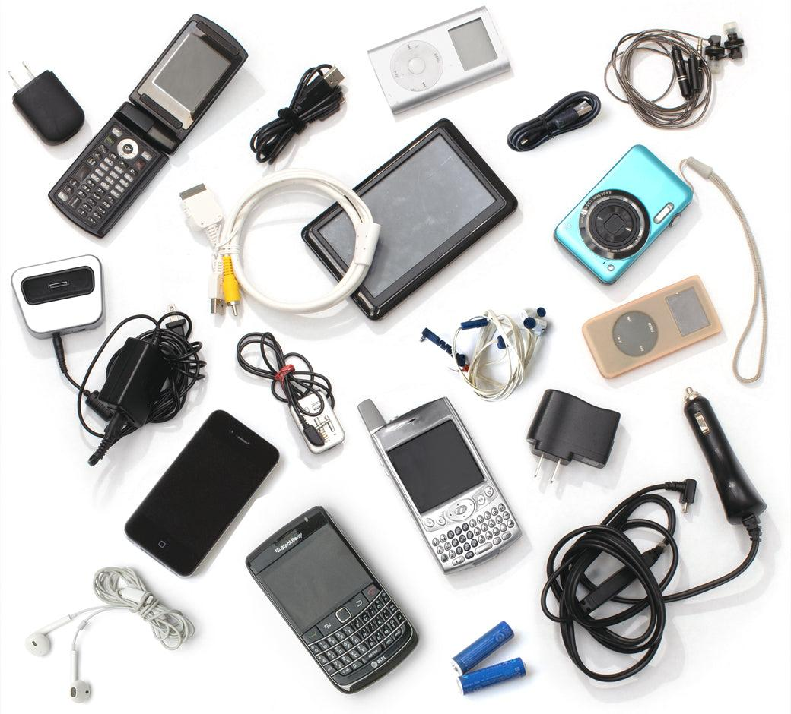
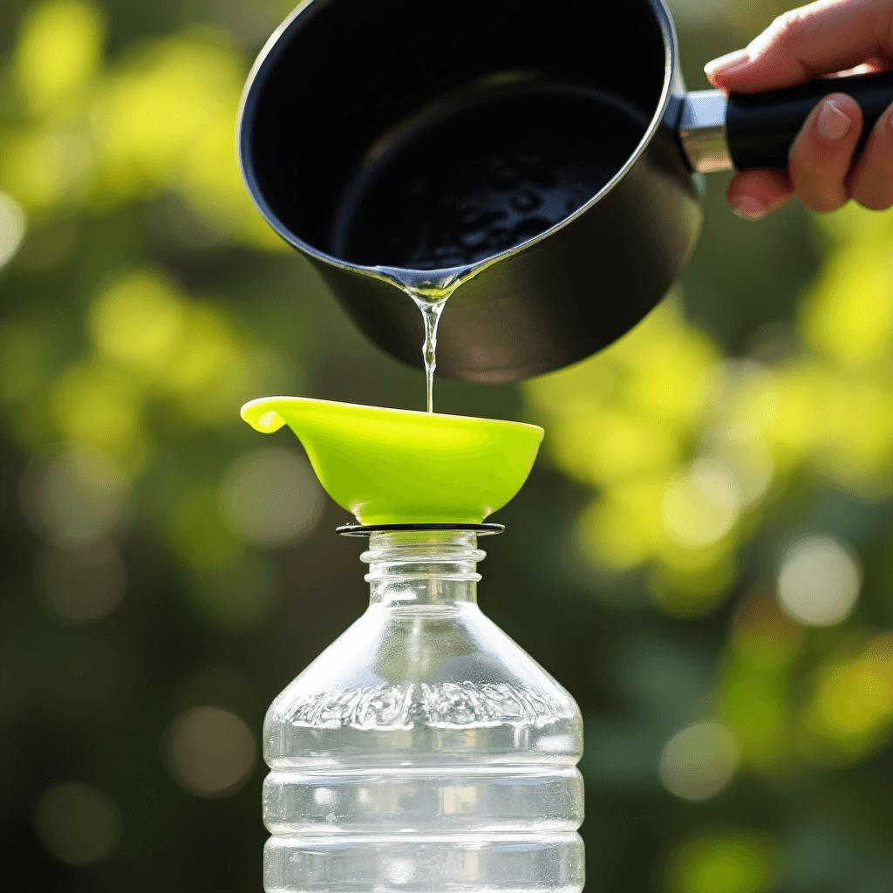
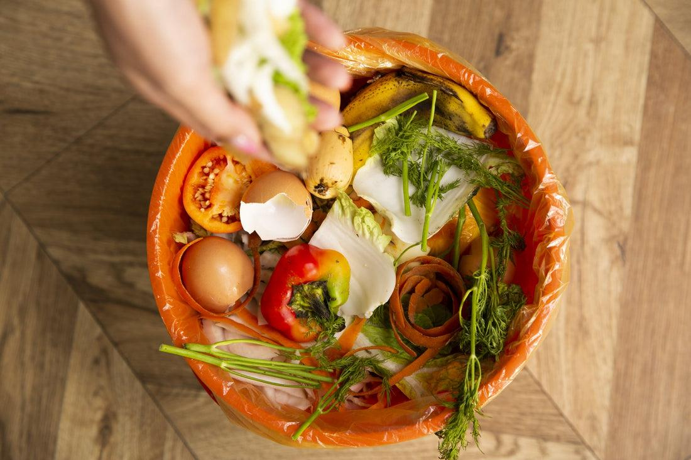
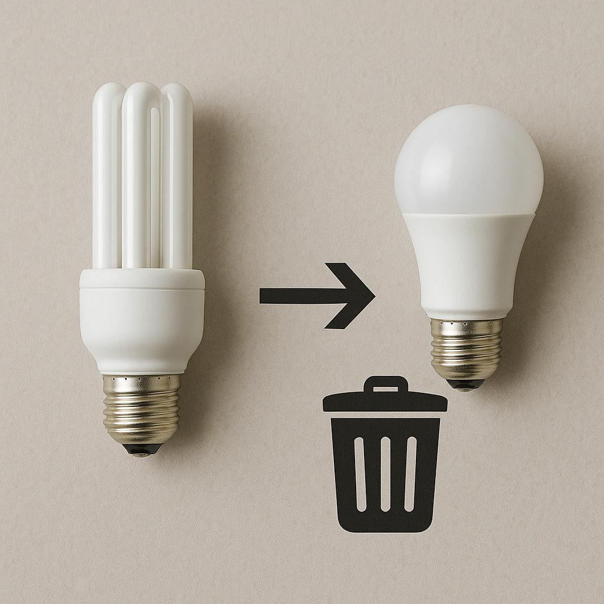

DESCARTE CONSCIENTE
Por que descartar corretamente?


O descarte inadequado de resíduos é um problema ambiental que afeta praias, rios, canais e oceanos. Quando o lixo é abandonado nas ruas, nos terrenos ou na areia, a chuva e o vento podem transportá-lo para o ambiente marinho. Plásticos, latas, vidros e outros resíduos podem ferir animais, contaminar ambientes naturais e prejudicar a qualidade dos espaços utilizados pela população. Além disso, o acúmulo de lixo pode obstruir bueiros e contribuir para problemas de drenagem urbana. Por isso, cuidar das praias começa antes mesmo de chegar à areia: começa com a maneira como produzimos, separamos e descartamos nossos resíduos.
Como descartar cada tipo de resíduo?
Uma embalagem descartada na rua pode ser levada pela chuva até os canais, rios e, finalmente, o mar. Mas esse caminho pode ser interrompido por escolhas simples. Aprenda a separar seus resíduos, descubra como descartar materiais especiais e encontre alternativas para dar uma destinação adequada ao lixo.
Plástico

Esvazie as embalagens, retire o excesso de resíduos e, se possível, amasse as garrafas para economizar espaço. Depois, encaminhe o material para a coleta seletiva ou para um ponto que aceite plástico.
Atenção: Nem todo tipo de plástico é aceito em todos os programas de reciclagem.
Vidro

Esvazie os recipientes e evite quebrá-los durante o manuseio. Leve-os a um ponto de coleta que aceite vidro. Se estiverem quebrados, proteja os cacos com material resistente e identifique a embalagem.
Atenção: nunca deixe cacos de vidro na areia ou em sacolas frágeis, pois podem causar acidentes.
Papel

Mantenha os papéis e as caixas secos e limpos. Dobre as caixas para reduzir o volume e separe os materiais para a coleta seletiva.
Atenção: papéis muito sujos, engordurados ou contaminados geralmente não são aceitos na reciclagem convencional.
Pilhas

Guarde esses materiais em local seco e seguro e procure coletores específicos em estabelecimentos ou pontos de entrega. Siga as orientações do local para realizar o descarte corretamente.
Atenção: nunca abra, perfure ou queime pilhas e baterias, nem as abandone na areia, em rios ou no meio ambiente.
Eletrônicos

Celulares, cabos, carregadores, teclados e outros aparelhos devem ser encaminhados a pontos de coleta de lixo eletrônico. Antes de entregar celulares e computadores, apague seus dados pessoais e siga as orientações para o descarte.
Atenção: não descarte equipamentos eletrônicos no mar, em terrenos ou junto aos resíduos comuns quando houver pontos específicos de recebimento.
Óleo de cozinha

Espere o óleo esfriar completamente e armazene-o em uma garrafa ou recipiente resistente e bem fechado. Depois, procure um ponto de coleta que receba óleo usado.
Atenção: nunca despeje óleo na pia, em bueiros, no solo ou diretamente no mar, pois ele pode contaminar a água e prejudicar o ambiente.
Orgânicos

Cascas de frutas, restos de vegetais e borra de café devem ser separados dos materiais recicláveis secos. Quando possível, encaminhe-os para a coleta de orgânicos ou utilize a compostagem para transformá-los em adubo.
Atenção: verifique quais resíduos são aceitos pelo sistema de compostagem utilizado.
Lâmpadas

Mantenha as lâmpadas intactas e protegidas e procure um ponto de coleta que aceite o modelo utilizado. Algumas lâmpadas exigem tratamento especializado devido aos componentes presentes em sua composição.
Atenção: não quebre lâmpadas de propósito nem as misture automaticamente com os recicláveis comuns. Se alguma quebrar, siga as orientações de segurança específicas para esse tipo de lâmpada.
ONDE DESCARTAR EM PAULISTA?
Encontre pontos de coleta e descubra opções para descartar seus resíduos corretamente.
Ecoponto de Maranguape I
Av. Prefeito Geraldo Pinho Alves, nº 222, Maranguape, Paulista-PE.
ECOBRAS Gestão Ambiental
Rua Canoas, 14 A, Arthur Lundgren I, Paulista–PE.
Recicla Brasil Comércio de Resíduos
Rodovia BR-101 Norte, km 56, Galpão B, Paratibe, Paulista-PE.